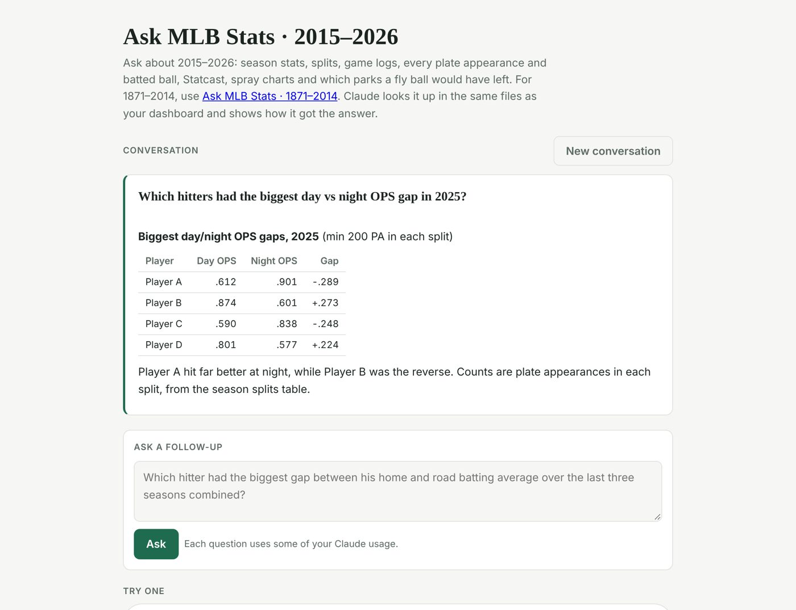
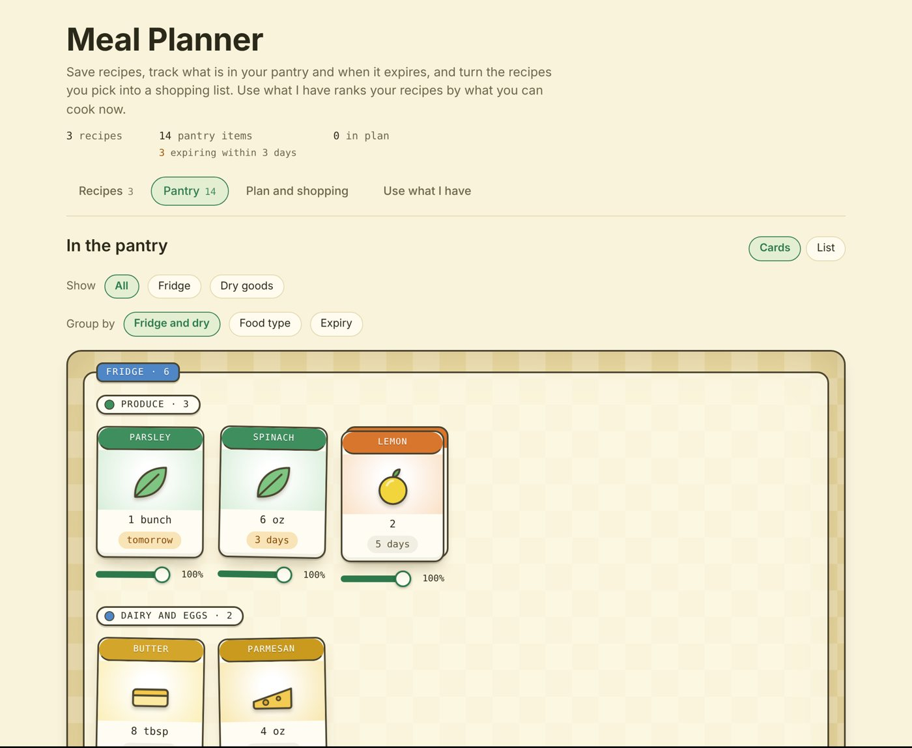
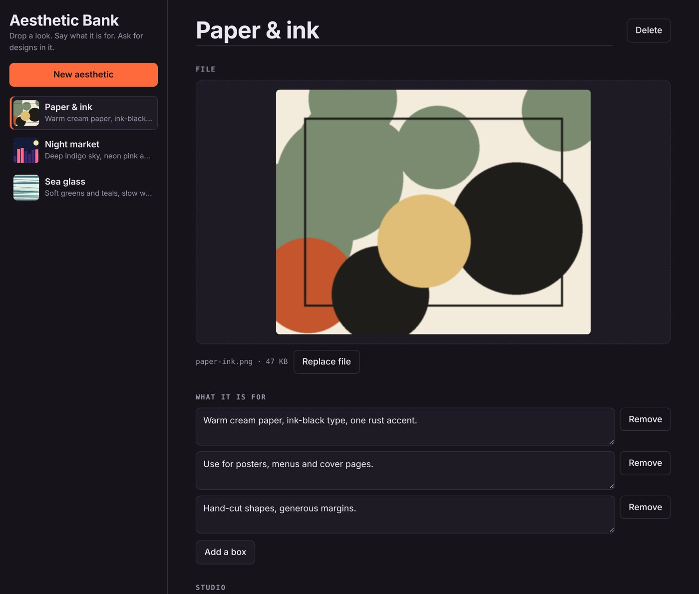
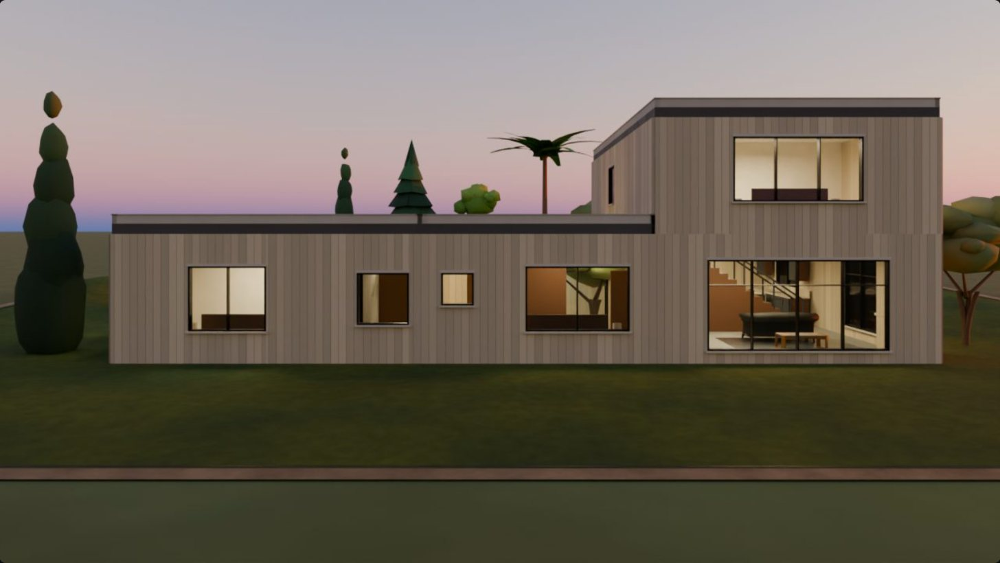

Home runs
48
Player A · 1
Data tools and small apps I designed and built with Claude. They're personal tools, so the live versions stay private. Each section below shows what it does and how it's built.
Interactive leaderboards and full stat tables for every regular-season hitter and pitcher: leaders, two-stat scatter plots, situational splits, Statcast quality-of-contact, pitch velocity and zones, spray charts, and career history.
| Player | PA | AVG | OBP | SLG | OPS |
|---|---|---|---|---|---|
| Player A | 650 | .291 | .402 | .583 | .985 |
| Player B | 612 | .318 | .377 | .560 | .937 |
| Player C | 588 | .270 | .391 | .510 | .901 |
Type a baseball question in plain English and get an answer computed from the underlying game and season tables, shown with the table it came from. One version covers 2015–2026 pitch-level data, another 1871–2014.

A pantry, recipe box, weekly plan and shopping list in one place, with a "use what I have" mode that ranks recipes by how much of them the pantry already covers.

A library for visual looks: save reference images with notes on how to use them, then ask Claude to design something in a saved look.

A home-design studio where plain-English requests edit a persistent 3D house model: rooms, walls, windows and doors, furniture and landscaping. Every change is saved and can be undone.

A small macOS menu-bar plugin that shows the current Spotify track and, on a click or keyboard shortcut, finds a new song similar to the one playing and plays it. "Endless mode" lines up the next suggestion before the current song ends.
Illustrative mockup of the menu. Command names: suggest toggle next prev reset auto search